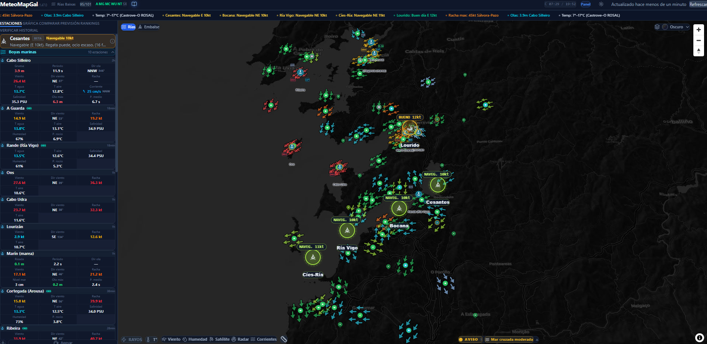
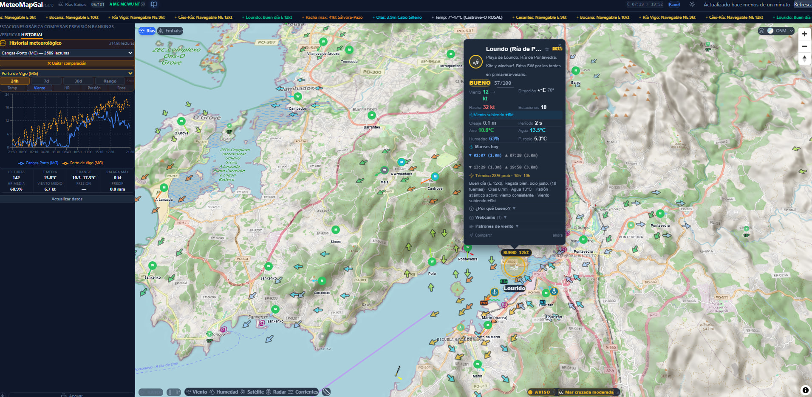

VORTAL XR SL — BF Sport Aceleracion 2026
No existe una herramienta que diga cuando y donde hay condiciones para navegar en Galicia. Las alternativas (Windguru, Windy) usan modelos globales que no capturan los microclimas de las rias gallegas.
Durante eventos deportivos, un cambio brusco de viento o tormenta pone en riesgo a deportistas. Los peligros en los desplazamientos terrestres se descuidan. No hay herramientas de alerta temprana localizada.


132 estaciones · 13 boyas · 6 fuentes · Datos cada 5 minutos · Alertas 24/7 via Telegram
132 estaciones de 6 redes + 13 boyas marinas. Datos cada 5 minutos, no modelos teoricos.
Algoritmos de patrones locales: termicas, virazones, bocanas. Prediccion 12-24h con theta-v.
Tormentas, viento fuerte, oleaje, niebla. Telegram automatico. Sin depender del navegador.
6 spots con veredicto 5 niveles. Consenso ponderado de multiples fuentes. Validado con datos reales.
Seguimiento de tormentas con ETA. Calculo de avance. Critico para regatas y competiciones.
Widget embeddable, API de datos. Para clubs, federaciones y plataformas de terceros.
Acceso completo a datos en tiempo real. Scoring, alertas basicas, forecast 48h. Open source. Genera comunidad.
0 EUR
Historial 90 dias, alertas personalizadas, forecast 7 dias, API de datos. Sin publicidad.
5-10 EUR/mes
Dashboard multi-spot. Panel de seguridad para competiciones. Informes PDF. Widget embeddable.
15-30 EUR/mes
+ Licencia API para plataformas deportivas + Consultoria meteorologica para eventos
Experiencia conjunta: 8a edicion BF Auto (aceleracion sector automocion)
Empresa: VORTAL XR SL
6 fuentes de datos · Polling cada 5 min · TimescaleDB · PWA instalable · Carga <3s
VORTAL XR SL — BF Sport Aceleracion 2026